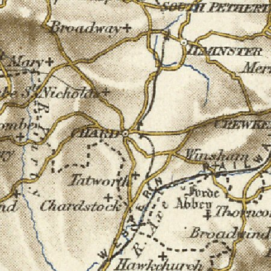
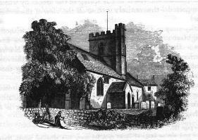

Our Warry's are deeply rooted in Somerset around the town of Chard. There is reference to a William atte Warrye of Chard in 1327 as a contributor to the Lay Subsidy of Edward I (the sum of 15d). Also in 1352 John Weyry appears before Chard Manor Court in plea of a debt. Unfortunately no direct link can be found to these two individuals from our Warry's but it is clear evidence of the family being present in the town 700 years ago.

The first individual from which a direct line can be identified is Stephen Warry of Chard who died in 1530. We are grateful to Stephen Berry and Michael Warry of the Warry Family Society who have brought together and undertaken a vast amount of Warry research enabling us to make this link.
Stephen Warry had three children that we know of, Richard, Alice and Walter, however we have been unable to identify their dates of birth. Most of our evidence from this period is collected from wills and the same is true of the following generation. Richard Warry , of Baydge, Winsham, had five children including a son called Richard. Richard Warry (junior) was a victualler of Kyneston Well and married Margaret. She together with their four children are mentioned in his will following his death in 1597.
There are five further generations before we have access to birth data to help us construct a picture of the family. From Richard of Kyneston the line passes through John Warry, a yeoman of Perry Street, Chard. Then through Henry Warry of Tatworth, William and Samual.
We don't know when Samual was born, but we know that he, married Mary Slade of East Hennock in December 1699. We also know that they had five children between 1695 and 1706 and our line continues through the only son Thomas, born in Chard in 1703. Thomas married Sarah Hawker at Thorncombe in 1731 and they had four children, again the line continued through the only son William. Thomas died in 1748, being outlived by his father Samuel who died in Haselbury Plunchnett three years later.
Thomas and Sarah's son William was born in his mothers home village of Thorncombe in 1732 shortly after his parents marriage. He married Elizabeth Stoodley in 1752 in Wayford and they had four children that we know of, although the eldest son Samuel died shortly after his birth. The next eldest surviving son was also called William and was born in 1756 in Chard. William marries Rachel Phillips and they have five children, the first two born in Winsham before the family returned to Chard sometime between 1781 and 1784.

From this point on our Warry's remained in Chard for another three generations starting with William and Rachels son John, the eldest of five, born in 1779. John was a shoemaker and married a Chard girl, Rebecca Metford, at Broadway in 1797. They had many children between 1802 and 1817 as Rebecca gives birth to eleven, sadly losing five children before the age of 2. Their oldest surviving son Thomas Warry was born in 1804 and continued our Warry line, whilst his brother George Warry became a mariner and ended his days in Jamaica, where he was buried in 1852.
Thomas remained in Chard all his working life being described as both an agricultural labourer and a waggoner. He married Elizabeth Russell of Coobe St Nicholas and they had three children that we know about. The eldest daughter was named Rebecca, possibly after her grandmother. Born in 1843 she married James Fowler at the age of 20 in Chard in 1863.
Current Research : No active research at this time.
Click here for full details of our Warry ancestry
July 14, 2011